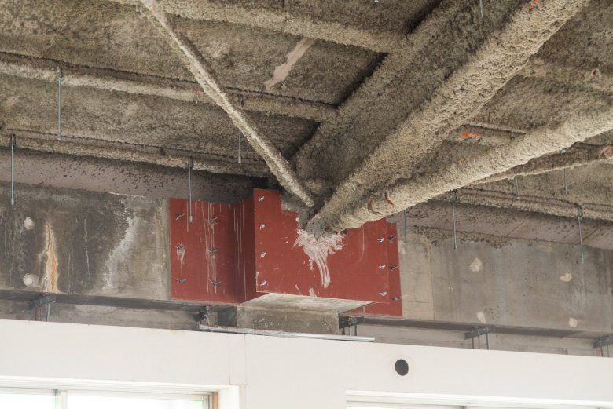
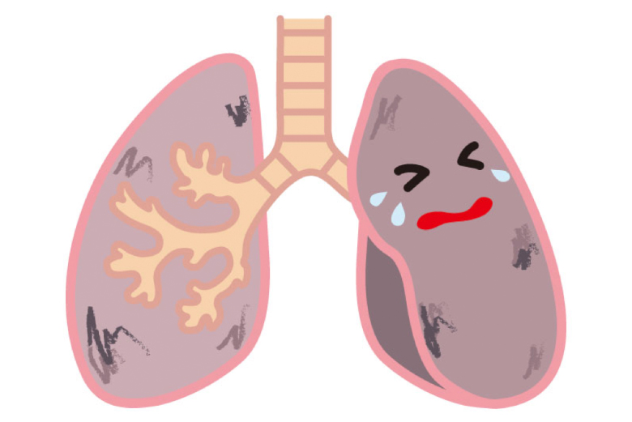
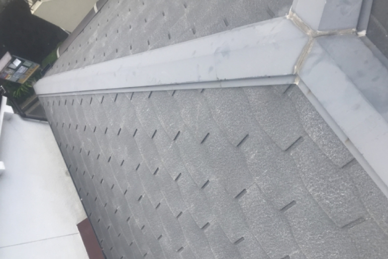
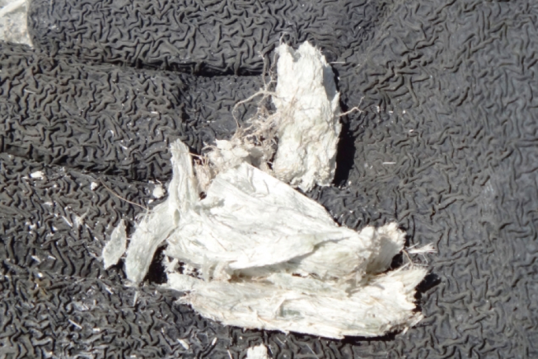

アスベストが今後の解体費用を左右する？

1.アスベストって何??
「アスベスト」と聞けば多くの人が「人体に有害な建材」と思い浮かべることができると思います。
でも自分には無関係だから…と思いきや、解体を検討している空き家をお持ちの方にとっては、解体費用に関わってくる重大な問題なんです。
解体費用で損をしないためにも、ある程度の知識をもっておくべきアスベストについて詳しくご説明していきたいと思います。
ではまず、アスベストって一体どんなものなのでしょう？
アスベストとは天然鉱物の一種で、別名【石綿】とも呼ばれるように、石でありながら軽い綿状の性質を持っています。
安価で加工しやすく、耐火性・断熱性・電気絶縁性が高い性質を持っているため、かつては断熱材や保温材、防音材として建築物に多く使用されてきました。
しかし、アスベストが使用されるようになってしばらくすると、アスベストによる健康被害が多く報告されるようになり、日本各地でも訴訟に発展するほどの深刻な問題となっていきます。
2.アスベストが人体にもたらす害

現在では使用禁止となっているアスベストですが、どんな建物に「アスベスト使用の疑い」があるのでしょうか？
アスベストは日本の高度経済成長期のスタートである1955年頃から使われ始め、ビルなどの耐火被覆材、一般家屋の床材や屋根材・外壁材など、非常に多岐にわたって多く使用されました。
一般的にはビルの駐車場などの大型建造物に使われている印象かもしれませんが、アスベストを0.1%以上含む製品の出荷が原則禁止となる2006年までは、一般家屋にも使用されていた可能性があります。
意外と最近まで使用されていたことに驚いてしまいますよね。
3.どんな建物にアスベストが使われているの?

私たちが様々な試行錯誤の末に作り上げてきた『くらそうね』はエンドユーザーの皆さんも解体工事会社の皆さんも、ともに高い満足度を感じてもらうためのサービスです。
無駄な多重マージンをカットして、解体工事会社の利益率だけを上げる。
優良な工事会社に正当な利益が出れば、職人を目指す若者も増えて職人不足の解消にも繋がります。
これから人口減少が加速して空き家率はどんどん高まり、解体工事のニーズは住宅着工数とは反比例して増えていく見込みです。
ニーズはあるのに業界がアナログ体質すぎて良さが伝わらずにいた問題を、『くらそうね』というITが大きく変えていく。
空き家の解体工事は新しい未来を作るための第一歩と考え、さらなる利便性と変革を求めて、『くらそうね』は登録工事会社さんと共にもっともっと進化していくサービスでありたいと思っています。
4.アスベストに関する法律の整備
アスベストを含む建物の解体工事が始まるようになって、作業員や近隣住民からの健康被害が報告されはじめ、日本でもようやくアスベストに関する法の整備が始まっていきました。
1975年にアスベスト含有率が重量の5％を超える場合の吹き付け作業を禁止する法律から始まり、数年ごとに少しずつ禁止事項が増え、2006年にようやくアスベストの含有量が重量の0.1％を越えるものの製造、輸入、譲渡、提供、使用が禁止されました。
現在、解体を検討している建物の多くは2006年以前に建てられた建物になるはずですので、まずは所有の空き家にアスベストが含まれていないか、疑ってかかることが大切です。
5.アスベスト調査費・処分費は年々高騰していく?

所有している空き家にアスベストが使われているか調べるには、専門の資格を持ったスタッフが在籍している解体工事会社に診断を依頼し、使用が判明すれば、アスベスト処分費用を含んだ解体工事を行う必要があります。
意外と近年までアスベストに関する法の整備が緩やかに定まってきているということは、今後もさらにアスベストに関する新しい法律が施行されると見ていいでしょう。
そして高度成長期に建てられた建造物の解体はこれからさらに増え続けることを考慮すると、アスベストを含む建物の調査費・処分費は年々高くなっていくことが予測できます。
所有している空き家にアスベストが使用されている可能性は決してゼロではありません。調査費・処分費が値上がってしまう前に、ぜひ早めの依頼を検討しましょう。

工事会社からの営業電話やメールは一切しないので、
安心してお見積もり入力してください。